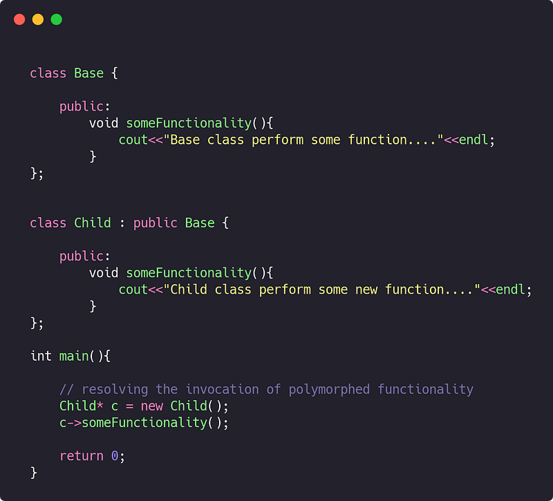
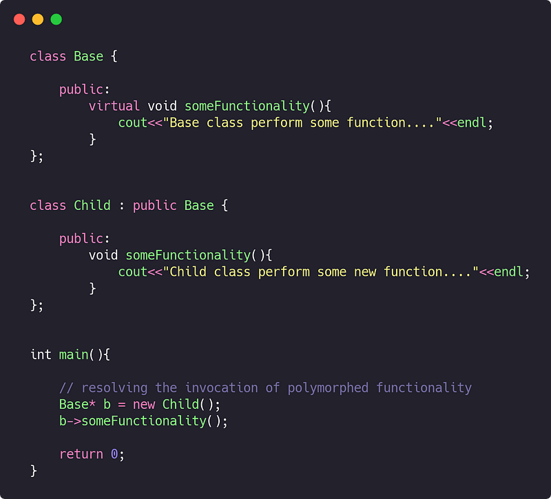
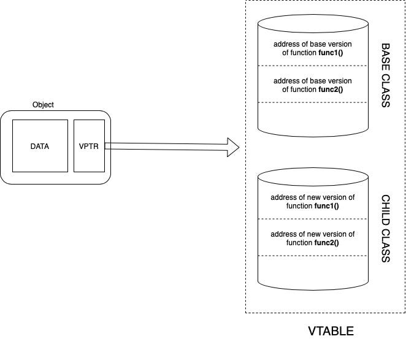
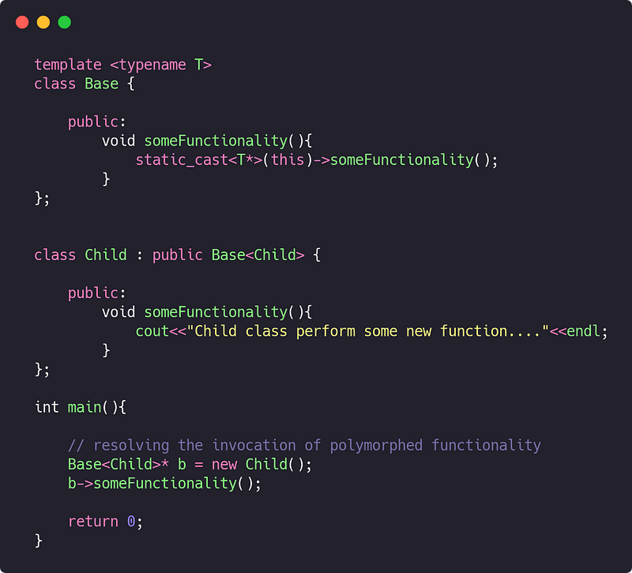

Polymorphism is an important concept of Object oriented programming paradigm. It comprise of two words, poly which means multiple and morph which means states. It can be classified in two ways on the basis of time at which the procedure call is resolved.
- Static Polymorphism
- Dynamic Polymorphism
Static Polymorphism implies that the invocation (call) to a function is resolved at compile time. It can be implemented using Overloading. Further details of static polymorphism are out of the scope of this article but you can read more about it on javatpoint blog about c++ overloading.
Dynamic Polymorphism implies the runtime resolution of function call. It is implies via Overriding which in turn is followed by inheritance in c++.
Here are the examples showing the implementation of static as well as dynamic polymorphism.

Dynamic polymorphism is not so simple as it appears in the syntax. Compiler has to resolve the overloaded function call at runtime. Our aim is to perform this resolution of correct function call efficiently.
Incase of a simple non casted pointer for an object , we can use this approach and it is also known as early binding as the call is bound to the object pointer at compile time.
But incase of casting , early binding would not help. During upcasting, if we need to invoke the polymorphed function then we have to implement the base function as a virtual function. Virtual functions ensure that the correct function is called for an object, regardless of the type of reference (or pointer) used for function call. This is also called late binding.

This is a general way of implementing dynamic polymorphism in C++. Compiler will resolve the call to polymorphed function using virtual table.

ADVANTAGE
Virtual table is useful in resolving the call to the child class method. Every instance of a class holds a pointer to virtual table VPTR which in turn maintains different versions of polymorphed function. It provides a mechanism to resolve the call to the right version of function in a inheritance tree
DISADVANTAGE
Despite of this advantage, there are some drawbacks of this approach. Every time a virtual function is invoked, compiler makes a hit to the Virtual table VTABLE which makes the call to virtual functions a little expensive.
Hence, another approach can be used to implement dynamic polymorphism. Templates can be used to implement a generics in a base class. This template can hold a base version of function which can cast the this pointer to the desired object and can call the function related to that object type.

This approach comes under the label of TMP ie. Template Meta Programming
ADVANTAGE
It mitigate the cost of using a virtual table and also eliminate the use of pointer to the virtual table ( VPTR ). This approach will make the call to the polymorph function just like a normal function as the object resolution mechanism is provided explicitly by the code.
It also allows the developer to avoid the error of forgetting to define base function as virtual.
DISADVANTAGE
There is nothing like free lunch in this world. Just like the previous approach, this approach also comes with a cost. Templates generate a new copy of base class for each initialisation on compile time. Therefore, it increase the size of object file and hence the binaries. Using a lot of TMP, will unnecessarily bulk up your compiled code.
CONCLUSION
Dynamic polymorphism can be introduced in code via overriding. Overriding in turn, can be implemented in two ways :
- Virtual functions/methods
- Template meta programming
Both of the approaches have their pros and cons. Hence, a developer has to decide how to design the code in order to harness the power of dynamic polymorphism.
“ Polymorphism is such a powerful concept that if it is implemented in an efficient and clean manner to a feasible limit (not overused) then it can enhance the software structure significantly. “